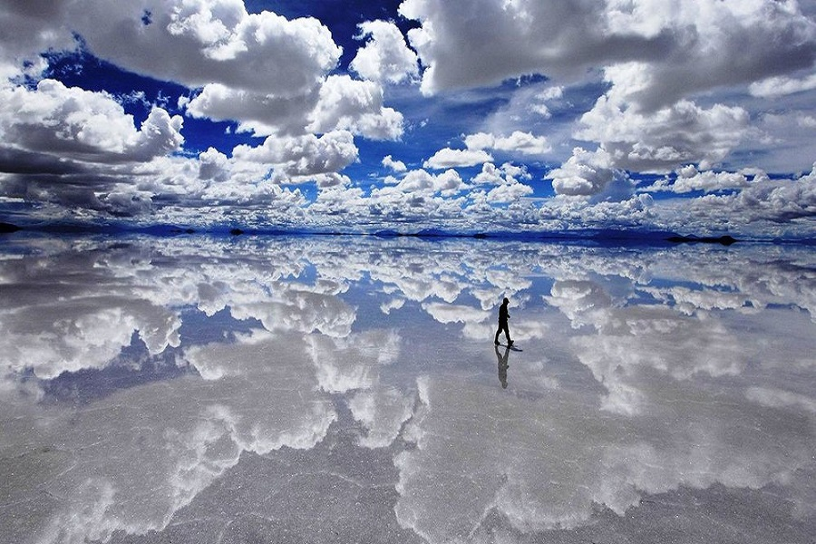

je jedním z nejznámějších vodopádů na Islandu....Leží nedaleko
pobřeží na jihu
ostrova mezi městem Selfoss a vodopádem Skógafoss. Poblíž něj odbočuje z Hringvegur cesta do údolí
Þórsmörk.
Je napájen řekou Seljalandsá. Padá z bývalých útesů do hloubky 60 metrů.
Byl cílem první etapy během 6. dílu soutěže The Amazing Race.
antelope canyon
je nejnavštěvovanější štěrbinový kaňon na jihozápadě...Spojených
států. Skládá se z Horního Antilopího
kaňonu (anglicky Upper Antelope Canyon) a Dolního Antilopího kaňonu (anglicky Lower Antelope Canyon) a
nachází se v blízkosti města Page v Arizoně. Poblíž se nachází Antelope Creek, potok s délkou asi 30 km.
Antilopí kaňony se nachází v blízkosti jezera Powell. Místy jsou v kaňonech umístěny žebříky, protože
některé části jsou neschůdné. Pokud jsou předpovídány deště, je zakázána návštěva kaňonů kvůli možným
povodním. V roce 1997 při potopě v Dolním Antilopím kaňonu zahynulo jedenáct turistů. Oba kaňony jsou
přístupné pouze prostřednictvím placených prohlídek s průvodcem.
salar de uyuni
je největší solná pláň na světě, jež byla ...dříve dnem jezera. Má rozlohu 10 582 km² (přibližně jako
rozloha Libanonu, resp. 25× větší než solná pláň Bonneville Salt Flats v Utahu v USA). Nachází se v
departementech Potosí a Oruro na jihu Bolívie v blízkosti hřebenu And v nadmořské výšce 3650 m. Je
pozůstatkem pleistocénního jezera Ballivián.

moraine lake
je ledovcové jezero v Národním parku Banff v Kanadě. Leží...čtrnáct kilometrů od vesnice Lake Louise v údolí
Valley of the Ten Peaks, v nadmořské výšce přibližně 1885 m n. m. Rozkládá se na ploše půl čtverečního
kilometru. V oblasti kolem jezera se nachází několik pěších turistických stezek. Jedna z nejčastěji
využívaných stezek nese název Rockpile Trail a táhne se kolem morény.